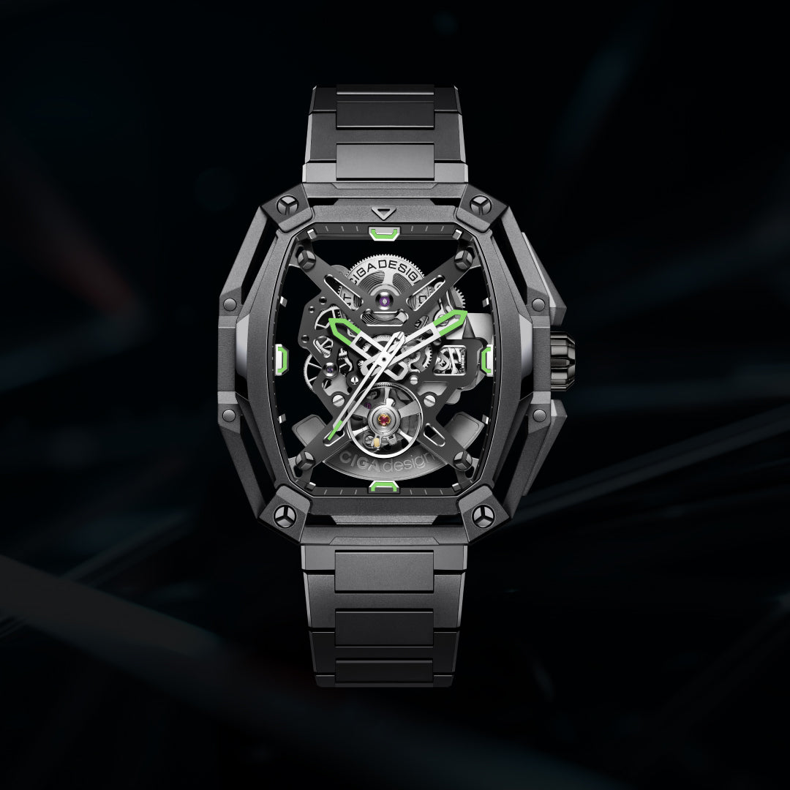
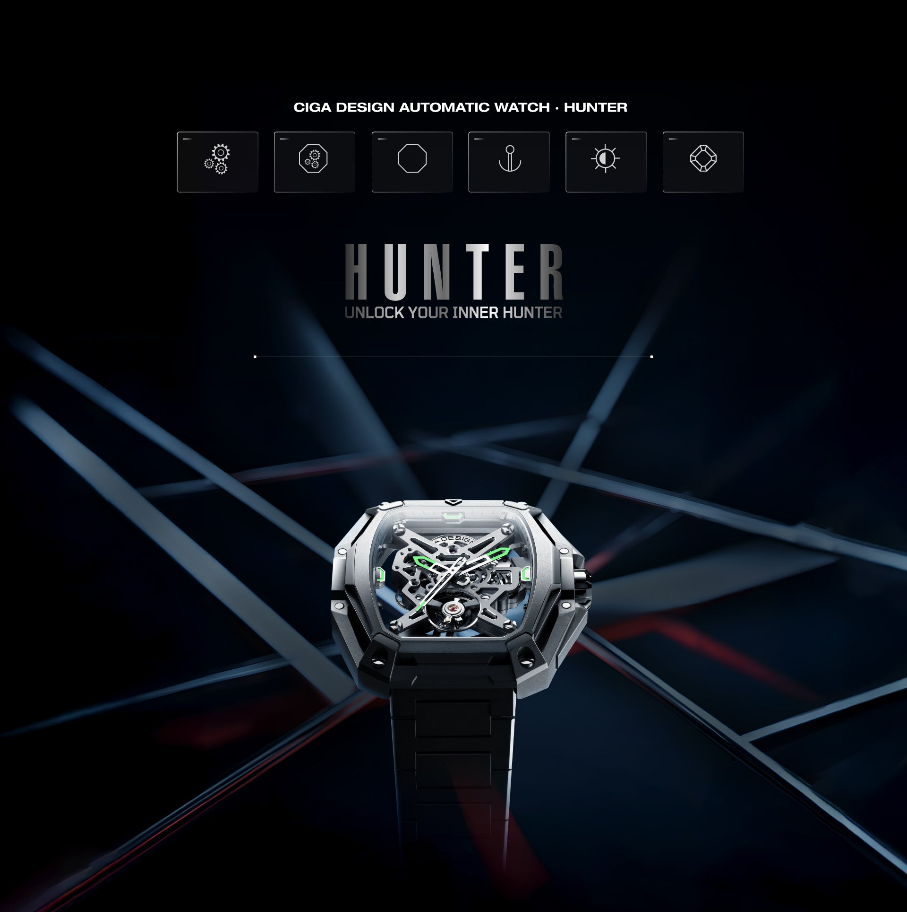
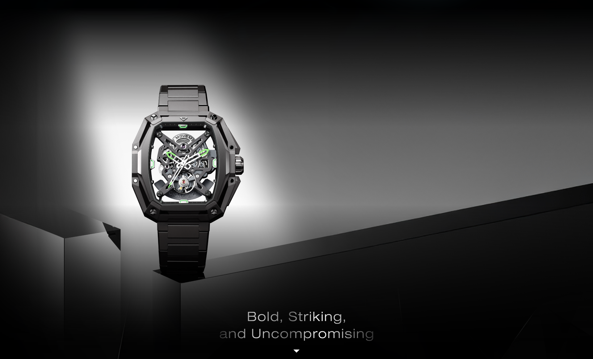
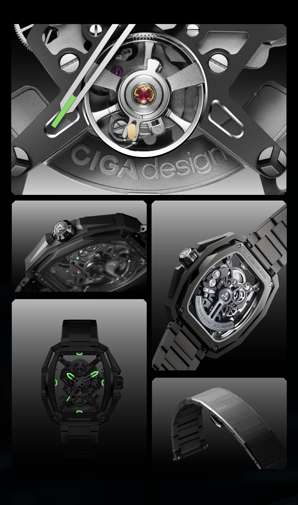
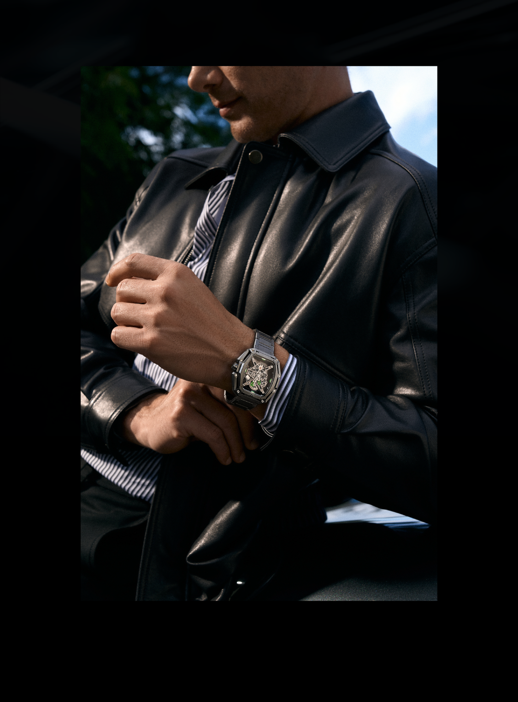

Robusto, preciso e implacável. O Hunter é um relógio de presença máxima no pulso — construído para homens que não passam despercebidos, movido pelo exclusivo calibre in-house CD-07 da CIGA design.
Movimento in-house desenvolvido pela CIGA design
O Hunter foi projetado para ser visto e sentido — uma peça de 43×48mm que declara intenção com cada milímetro da sua construção.

O Hunter não tenta ser sutil. Sua caixa de 43×48mm em aço inoxidável pesado declara presença antes mesmo de você notar os detalhes. A geometria robusta, os flancos bem trabalhados e a espessura calculada criam um relógio que ocupa o pulso com autoridade.
O mostrador exibe informação com hierarquia clara — horas, minutos e a data em posição privilegiada. Sem excessos desnecessários. Cada elemento foi colocado com propósito, criando uma leitura imediata mesmo no movimento mais rápido do dia.
A coroa em posição de destaque e a proteção lateral integrada completam o perfil de um relógio que foi projetado para ambientes exigentes e homens que exigem o mesmo do que usam.

O coração do Hunter é o calibre in-house CD-07 — um movimento desenvolvido integralmente pela CIGA design. Ter um calibre proprietário coloca a marca em um patamar distinto: pouquíssimas marcas independentes desenvolvem seus próprios movimentos do zero.
Com aproximadamente 48 horas de reserva de marcha, o CD-07 garante que o Hunter continue funcionando mesmo após dias sem uso — perfeito para quem alterna entre diferentes relógios na coleção.
O caseback em vidro de safira expõe o movimento com orgulho. A massa de auto-carregamento com acabamento personalizado é parte integrante da identidade visual do Hunter visto por baixo — um espetáculo mecânico disponível a qualquer momento.
Movimento automático desenvolvido pela própria CIGA design — um diferencial que pouquíssimas marcas independentes podem reivindicar.
Safira sintética na frente e no caseback — proteção máxima e acesso visual ao movimento automático de ambos os lados.
Reserve de marcha generosa de aproximadamente 48 horas — o Hunter continua funcionando mesmo após dois dias sem uso no pulso.
Ponteiros e índices revestidos com luminescente suíço para legibilidade garantida em condições de baixa luminosidade.
Cada especificação do Hunter foi pensada para sustentar o desempenho e a robustez de um relógio feito para durar.

| Tamanho da Caixa | 43mm × 48mm |
| Espessura da Caixa | 14,5mm |
| Material da Caixa | Aço inoxidável 316L |
| Tipo de Movimento | Automático in-house — calibre CD-07 |
| Frequência | 21,600 vph |
| Reserva de Marcha | Aproximadamente 48 horas |
| Indicadores | Horas, minutos, data |
| Precisão | -15 ~ +30 segundos/dia |
| Vidro | Safira sintética (frente e caseback) |
| Resistência à Água | 5 ATM (50 metros) |
| Largura da Pulseira | 22mm |
| Material da Pulseira | Couro genuíno / opção em aço |
| Sistema de Pulseira | Quick-release (troca sem ferramentas) |
| Luminescência | Super-LumiNova® (ponteiros e índices) |
Desenvolver um calibre próprio exige anos de engenharia, testes e refinamento. O CD-07 é o resultado desse investimento da CIGA design — um movimento que nasce, é testado e certificado integralmente dentro da marca. Isso confere ao Hunter um nível de autenticidade que vai muito além da aparência: cada segundo que passa é marcado por uma engenharia genuinamente proprietária.
Informações essenciais para que sua apresentação do Hunter seja precisa, autêntica e de alto impacto narrativo.
Como embaixador do Hunter, você está apresentando um relógio com um dos maiores diferenciais técnicos da CIGA design: o calibre in-house CD-07. Comunique esse diferencial com clareza e autoridade. Siga estas diretrizes para transmitir o verdadeiro nível desta peça.
Cada ângulo narrativo abaixo foi construído para maximizar o impacto do seu conteúdo sobre o Hunter.
| # | Direcionamento | Foco Narrativo | Base do Script (Exemplo) |
|---|---|---|---|
| 01 | Calibre In-House | CD-07 como diferencial técnico absoluto. | "Esse relógio tem algo que a maioria das marcas não consegue oferecer: um calibre desenvolvido internamente. O CD-07 é propriedade intelectual da CIGA design — não é um motor comprado em catálogo." |
| 02 | Presença no Pulso | O formato 43×48mm como declaração de estilo. | "Tem relógio que você nota no pulso de alguém antes mesmo de ver o rosto da pessoa. O Hunter é assim. 43×48mm de intenção pura." |
| 03 | 48 Horas de Reserva | Benefício real para colecionadores. | "Se você tem mais de um relógio, sabe o quanto é chato ter que dar corda toda vez que alterna. O Hunter tem 48 horas de reserva — dois dias sem uso, ainda funcionando." |
| 04 | O Caseback como Espetáculo | O CD-07 visível pelo fundo em safira. | "Vire o pulso. O fundo em safira revela o calibre CD-07 funcionando. É como ter um janela para a engenharia — um segundo mostrador que a maioria das pessoas nunca vai ver." |
| 05 | Para o Colecionador | Hunter como peça técnica em uma coleção. | "Para quem coleciona relógios com critério, o Hunter tem um argumento difícil de ignorar: calibre in-house, presença marcante e uma marca com 17 prêmios internacionais." |
| 06 | 5 ATM de Resistência | Robustez para o uso diário real. | "O Hunter não fica em vitrine. 5 ATM de resistência à água significa que ele vai junto para a academia, para a chuva, para qualquer situação do dia a dia." |
| 07 | Super-LumiNova® | Legibilidade em qualquer condição. | "No escuro total, o Hunter não desaparece. O Super-LumiNova® nos ponteiros e índices mantém a presença do relógio em qualquer condição de luz." |
| 08 | Quick-Release | Versatilidade sem comprometer a construção. | "A pulseira troca sem ferramenta. Couro para o trabalho, aço para o evento. O Hunter se adapta sem perder nada da sua identidade." |
| 09 | 17 Prêmios da Marca | O DNA premiado como contexto de confiança. | "A CIGA design tem 17 prêmios internacionais de design. O Hunter carrega esse DNA — não é uma marca que apareceu ontem, é uma referência global em relojoaria de design." |
| 10 | Presente Masculino | O Hunter como presente de alto impacto. | "Quer dar um presente que ele nunca vai esquecer? O Hunter chega em embalagem formato livro, com calibre in-house e uma história técnica que qualquer homem vai querer contar." |
Imagens oficiais do Hunter disponíveis para uso em seu conteúdo.

